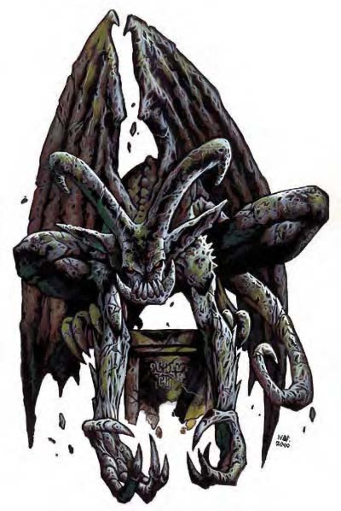

| 资料栏位 | 石像鬼 (Gargoyle) 中型人形怪物 (土系) |
| 生命骰 | 4d8+19 (37HP) |
| 先攻 | +2 |
| 速度 | 40英尺 (8格)、飞行60英尺 (普通) |
| 防御等级 | 16 (+2敏捷、+4天生)、接触12、措手不及14 |
| 基本攻击/擒抱 | +4 / +6 |
| 攻击 | 爪抓+6近战 (1d4+2) |
| 全力攻击 | 2 爪抓+6近战 (1d4+2) 及 啮咬+4近战 (1d6+1) 及 抵撞+4近战 (1d6+1) |
| 占据/触及 | 5英尺 / 5英尺 |
| 特殊攻击 | ― |
| 特殊能力 | 伤害减免10 / 魔法、黑暗视觉60英尺、静止不动 |
| 豁免 | 强韧+5、反射+6、意志+4 |
| 属性 | 力量15、敏捷14、体质18、智力6、感知11、魅力7 |
| 技能 | 躲藏+7*、聆听+4、侦察+4 |
| 专长 | 多重攻击、健壮 |
| 环境 | 任何 |
| 组织 | 单独、成双或翼群 (5-16) |
| 挑战级数 | 4 |
| 宝藏 | 标准 |
| 阵营 | 通常混乱邪恶 |
| 进化 | 5-6HD (中型)；7-12HD (大型) |
| 等级修正值 | +5 |
石像鬼是外型奇特的人形怪物，背后有翼，头上有角，全身皮肤如同石头一般。
石像鬼是会飞的掠食者，喜欢虐待比本身弱小的生物。
因为石像鬼可以长时间保持静止不动，多半情况下看来就像有翅膀的石像，而且他们也善用这种伪装出奇不意地突袭敌人。石像鬼不需进食、喝水或呼吸，但为了凌虐对手，通常会啖食倒地的敌人。没有猎物可以追逐取乐时，石像鬼通常会静静等待下一个倒霉的目标或是聚在一起相互吹捧。
石像鬼通晓通用语和土族语。
战斗石像鬼通常会静止不动准备发动突袭，如果情况不允许，也会从空中俯冲攻击。
在计算伤害减免时，石像鬼的天生武器视为魔法武器。
静止不动 (特异)：石像鬼可以完全静止不动，让自己看起来像是一座雕像，观看者必须通过“侦察”检定 (DC=20)，才能察觉到石像鬼是生物。
技能：石像鬼在进行“躲藏”、“聆听”和“侦察”检定时具有+2种族加值。若背景为岩石，“躲藏”检定上可以再获得+8种族加值。
水石像鬼是属于水生亚种的石像鬼分支。他们的基本行走速度40英尺，游泳速度60英尺，但不具飞行速度，只出没于水域环境。
石像鬼的人物石像鬼非常适合担任斥候、间谍和战士。因为具有快速起降的能力，他们可以突袭地面敌人后再飞到空中。
石像鬼人物具有下列种族特性：
― +4力量、+4敏捷、+8体质、-4智力、-4魅力。
― 中型。
― 石像鬼的基本行走速度为40英尺，飞行速度60英尺 (普通)。
― 黑暗视觉可达60英尺。
― 种族生命骰：石像鬼起始为4级人形怪物，生命骰4d8、基本攻击加值+4，强韧、反射与意志的基本豁免检定则分别是+1、+4及+4。
― 种族技能：石像鬼的人形怪物等级使他的技能点数为7x (2+智力调整值)。他的本职技能为躲藏、聆听和侦察。石像鬼在进行“躲藏”、“聆听”和“侦察”检定时具有+2种族加值。若背景为岩石，“躲藏”检定上可以再获得+8种族加值。
― 种族专长：石像鬼的人形怪物等级具有两个专长。
― +4天生防御加值。
― 特殊能力 (见前文)：伤害减免10 / 魔法、静止不动。
― 母语：通用语。额外语言：风族语、矮人语、精灵语、侏儒语、半身人语、巨人语、土族语。
― 适合职业：战士。
― 等级修正值：+5。